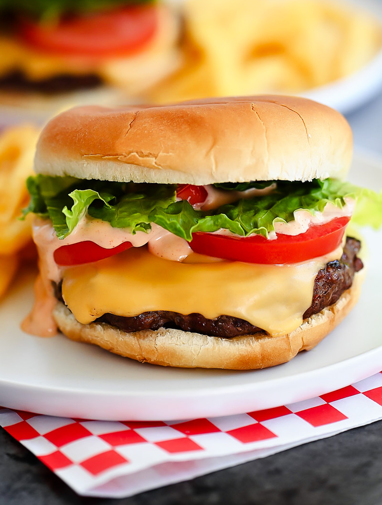

Home
Cheeseburger

Description
A cheeseburger is a classic comfort food made with a juicy, seasoned beef patty topped with melted cheese. The cheese drapes over the edges of the patty, adding a rich, creamy layer that blends perfectly with the savory flavors of the meat. Nestled in a soft, golden bun, the burger is often garnished with fresh lettuce, a thick slice of ripe tomato, and a few tangy pickles to bring a refreshing contrast.
Each bite offers a satisfying blend of textures: the warm, savory beef, the gooey melted cheese, and the cool crunch of crisp toppings. Ketchup, mustard, or a favorite sauce add an extra hint of flavor, making every cheeseburger easily customizable and endlessly enjoyable. Simple yet irresistible, this handheld favorite captures the essence of a hearty, flavorful meal.
Ingredients
- 1 lb ground beef (80/20 for best flavor)
- Salt and pepper, to taste
- 4 slices of cheese (American, cheddar, or Swiss)
- 4 burger buns
- Lettuce leaves
- 1 large tomato, sliced
- Dill pickles, sliced
- Ketchup, mustard, or favorite sauce (optional)
Method
- Prepare the patties: Shape the ground beef into 4 equal-sized patties, making a small indentation in the center of each to prevent them from puffing up while cooking. Season both sides with salt and pepper.
- Cook the patties: Heat a grill or skillet over medium-high heat. Cook the patties for about 3-4 minutes per side, or until they reach your desired level of doneness. During the last minute of cooking, place a slice of cheese on each patty and cover with a lid to melt.
- Toast the buns: While the patties cook, toast the burger buns lightly on the grill or in a separate pan until golden brown.
- Assemble the burgers: Place the cooked patties with melted cheese on the bottom half of each bun. Top with lettuce, tomato slices, and pickles. Add ketchup, mustard, or your favorite sauce if desired.
- Serve: Place the top bun on the assembled ingredients and serve immediately. Enjoy your delicious cheeseburger!